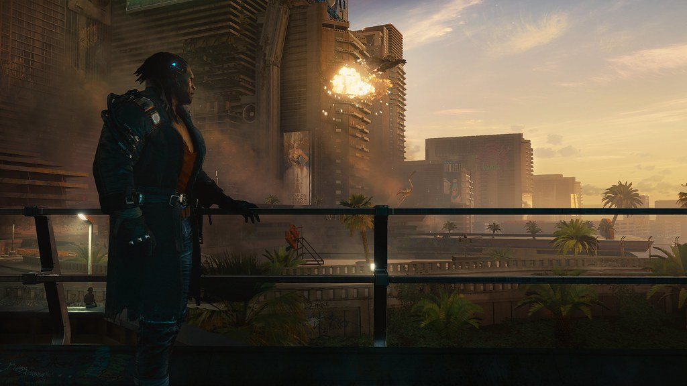

About Me!

My name is Tristan Stallcup, I go to Warren, and this is my first website for my class. I'm excited for what else I will do in this class and see how far I get.
I picked this topic because I love the story, plot, and characters. I made this website because I'm a massive fan of Cyberpunk, and I hoped that this would open more eyes to it since no one seems to have heard of it.